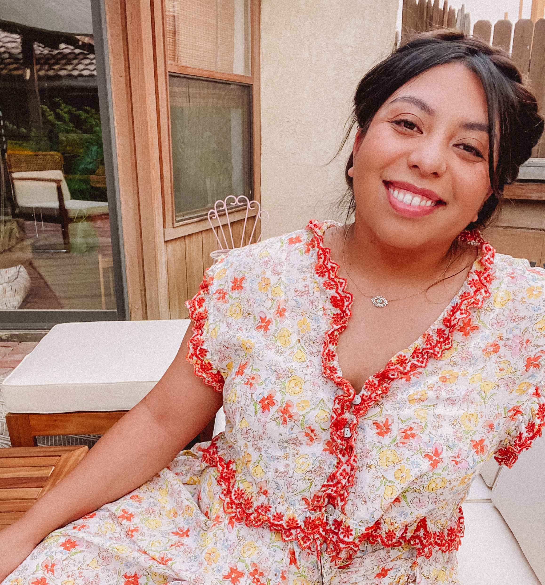

Hello and welcome! My name is Jennifer Bryan and I am a long-time plant and garden enthusiest. There is nothing more satisfying than harvesting a bed of lettuce or making fresh bruschetta with tomatoes you grew over the summer.
While the rewards of harvesting fresh produce are exciting, there is a lot of hard work that must be done to get there. I can help you with that and make it as easy as possible to harvest your first crop.
Additionally, gardening can be incredibly soothing and has been known to help with mental stress.
The first thing we will do is plan
and prep your garden. We will sit
and find the sunniest spots for what
you want to grow and prepare your soil.
Next, we will put together your raised
beds and plant your veggies, flowers,
or fruit.
You can either maintain your garden
on your own using some advice from me
or we can continue to work together
as you become more confident with
your gardening.